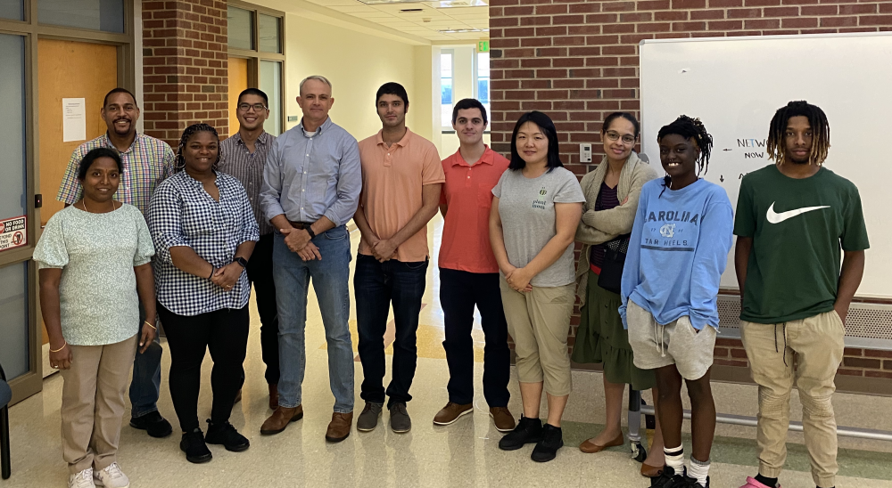

Welcome to our Team Page
Our group is the first Create Opportunity Cohort with Central Community Colledge in Charlotte, NC. Create Opportunity is an establishment with goals of expanding access to much-needed software engineers by providing training and apprenticeship. This new location will help fill the great need for software engineering talent in the area. Lots of great stuff planned for the future! Learn more about Create Opporunity.
